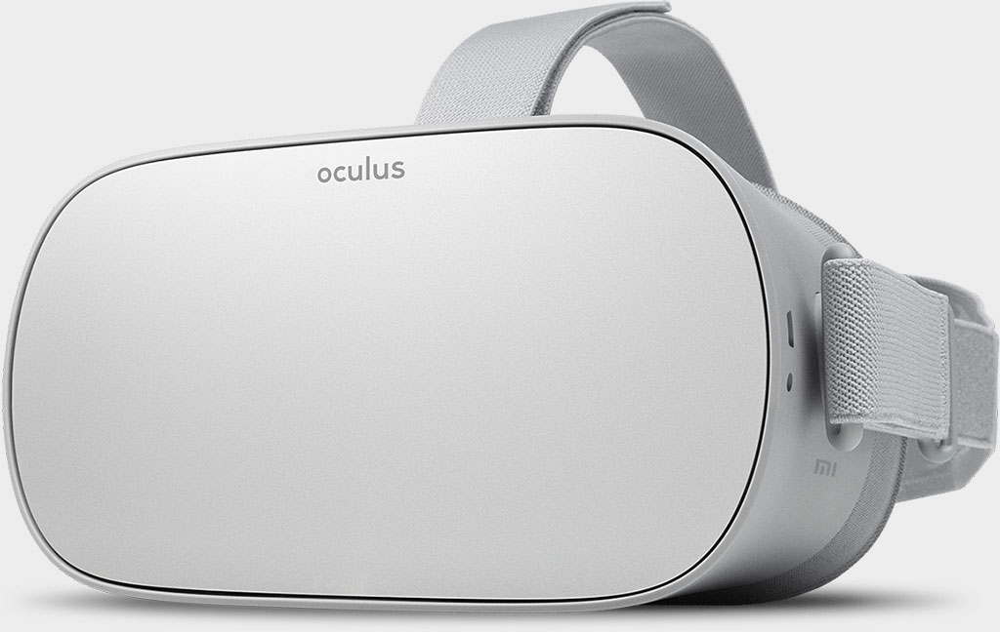

Oculus Go (oculus-pacific)
| This device is a VR Headset. The display may not look how it should. |
| This pmOS port is currently a WIP. Updates on working hardware will appear on this page as they come in. This port is not using Mainline, however a Mainline build is planned. |
It is currently able to boot Mainline (very very minimal). Only display is seemingly working in mainline. Currently not possible to figure out what else at the moment since you cannot really see what is happening on the screen, since it is all outside of the viewing FOV.
|
 Oculus Go | |
| Manufacturer | Oculus |
|---|---|
| Name | Go (Oculus Pacific) |
| Codename | oculus-pacific |
| Released | 2018 |
| Category | testing |
| Original software | Android 7.0.1 |
| Hardware | |
| Chipset | Qualcomm Snapdragon 820 (MSM8996) |
| CPU | 2x 2.2/2.3 GHz Kryo, 2x 1.6 GHz Kryo |
| GPU | Adreno 530 |
| Display | 2560x1440 (538 ppi) (1280×1440 per eye) |
| Storage | 32, 64 GB |
| Memory | 3 GB |
| Architecture | aarch64 |
{kind=link}
| USB Networking | |
|---|---|
| Flashing | |
| Touchscreen |
Unavailable
|
| Display |
Works
|
| WiFi | |
| FDE |
Broken
|
| Mainline |
Partial
|
| Battery | |
| 3D Acceleration |
Broken
|
| Audio | |
| Bluetooth | |
| Camera |
Unavailable
|
| GPS | |
| Mobile data |
Unavailable
|
| SMS |
Unavailable
|
| Calls |
Unavailable
|
| USB OTG | |
| NFC | |
| Accelerometer |
Broken
|
|---|---|
| Magnetometer | |
| Ambient Light | |
| Proximity | |
| Hall Effect | |
| Barometer | |
| Power Sensor | |
| Camera Flash | |
|---|---|
| Keyboard | |
| Touchpad | |
| USB-A | |
| HDMI/DP | |
| Ir TX | |
| Ir RX | |
| Stylus | |
| Haptics | |
| Ethernet | |
| FOSS bootloader | |
|
This device is based on the Snapdragon 821. See the SoC page for common tips, guides and troubleshooting steps |
Progress So Far
- Kernel package builds properly.
- Device package builds properly.
- pmbootstrap install works (the boot-deploy issue seemed to be caused by the dtb file not being found. Found that out by looking at the log file more in depth.)
So far that is all.
Problems That Need Fixing
- Basically everything at this moment.
Special Boot Modes
Fastboot Mode
While in Fastboot mode, you can use Volume Up + Volume Down to select an action from the menu at the top of the screen, and Power to select the action (i.e. Exit and boot the device, Factory reset, Enable sideloading update, and Power off.)
You can also use a computer to issue Fastboot commands to flash firmware to the device and manage the current slot that the bootloader is using to boot the operating system.
Enter Fastboot Mode
Just hold down Volume Down + Power for a few seconds to enter Fastboot mode.
Unlock the bootloader
To unlock the bootloader you must have access to a PC and the Oculus USB drivers.
- First download the drivers if you have not done so already: Oculus ADB drivers.
- Second go to the Oculus Go's bootloader unlock site and download the update package: Official unlock website. It also has the instructions to unlock the bootloader.
- Once you have those boot into the bootloader and navigate to the "Enable Sideload Update" option using the Volume Up and/or Volume Down keys and press Power
- When the sideload prompt comes up use ADB to sideload the unlocked_build.zip OTA to your headset. When it is finished navigate to "Reboot system now" and select it if the headset didn't automatically reboot for you.
- Once the headset boots into the OS, reboot to bootloader again and type
fastboot oem unlock
on your PC. Read the message displayed on your device screen, if you agree then confirm the unlock. THIS WILL ERASE YOUR DEVICE.
Maintainers
Contributors
| If you have this device (or any input you can add) and would like to help with getting pmOS up and running, please add your name here! |
Users owning this device
- Linear Cannon
- WolfLink115 (Notes: VR Headset I am currently working on mainlining.)